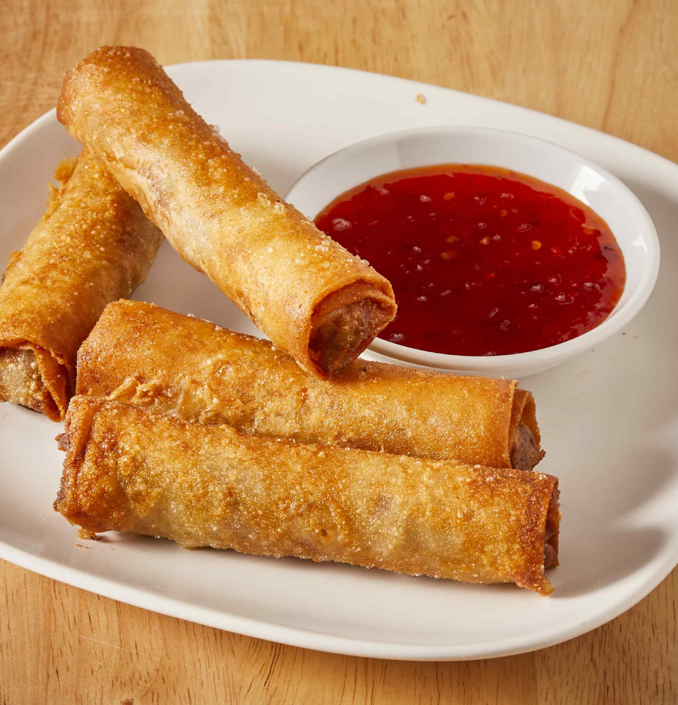

Lumpiang Shanghai

Ingredients
- Lumpia Wrappers
- Ground beef
- Ground pork
- Onion
- Garlic
- Carrot
- Salt
- Pepper
Directions
In a bowl mix all of the ingredients listed above. Salt and pepper to taste
Put a portion of the mixture on the Lumpia wrapper (Portion not bigger than yor thumb)
Fold one edge of the wrapper over to the other. Fold outer edges in slightly and continue to roll into a cylinder
Wet your finger and run it through the outer edges to seal the wrap
Heat oil in a pot at medium-high heat
Fry the wrap for at least 2 to 3 mins or until golden brown